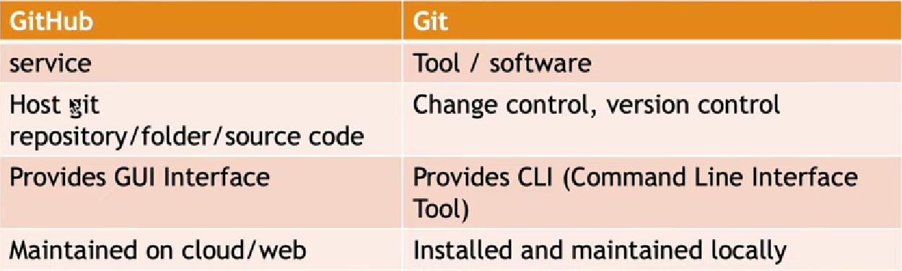
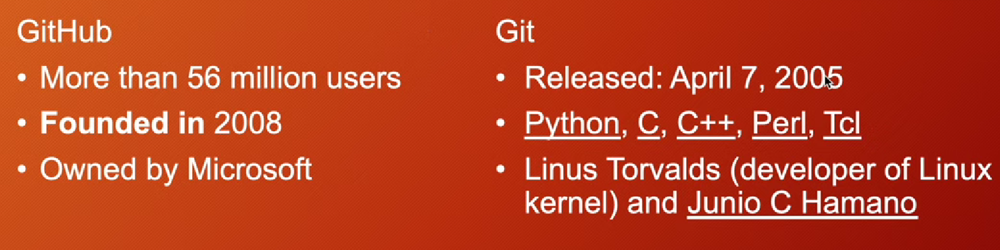

Version Control System Options:
Git is a version control system to manage code, while GitHub is a platform for hosting repositories.
 Set your global configuration for Git:
git config --global user.name "your name"git config --global user.email "your email"View the configuration:
git config --listSet your local configuration for a specific repository:
git config --local user.name "your name"git config --local user.email "your email"Unset a global configuration item:
git config --global unset user.email "your email"Use the following command to view all hidden files including your SSH keys:
Get-ChildItem -Force F:\Ehsan\complete-gitCommon commands for staging and unstaging files:
git add filename - Stages a specific filegit add -A - Stages all changed files in the directory and subdirectoriesgit add . - Stages all changed files in the directory, excluding subdirectoriesgit add *.js - Stages all .js files in the directorygit add **/*.js - Stages all .js files in the directory and subdirectoriesgit commit -m "message here"git commit -am "message here"To view commit history:
git log(full descriptive)git log --oneline(short descriptions)There are several ways to undo commits in Git:
git reset --soft HEAD^ - Undo the last commit but keep changes stagedgit reset HEAD^ - Undo the last commit and unstage the changesgit reset --hard HEAD^ - Completely undo the last commit and discard changesThere are several ways to undo commits in Git:
git show cmidnamegit checkout cmidname- switch to the individual head commitThere are several ways to undo commits in Git:
The image shows a .gitignore file with various patterns used to specify which files and directories should be ignored by Git: Specific
files:
test.txt: Ignores the test.txt file. .env: Ignores the .env file, typically used to store environment variables. Wildcard patterns:
*.txt: Ignores all .txt files in the repository.
!main.txt: An exception to the rule, main.txt will not be ignored even though all .txt files are ignored.
Pattern with a single character wildcard:
test?.txt: Ignores files like test1.txt, test2.txt, etc., where the ? matches any single character. Directory ignoring:
temp/: Ignores the temp directory and all of its contents.F
git remote -v (show remote repositories with url)
Branch: It refers to a new and separate branch of the master repository. In large projects, tasks and features are separated by creating branches. This allows work on new features without affecting the master branch.
git branch (current branch)
git branch branchname (new create branch)
git branch -d branchname (delete branch)
git checkout branchname (switch to anohter branch)
git checkout -b branchname (crate and switch to anohter branch)